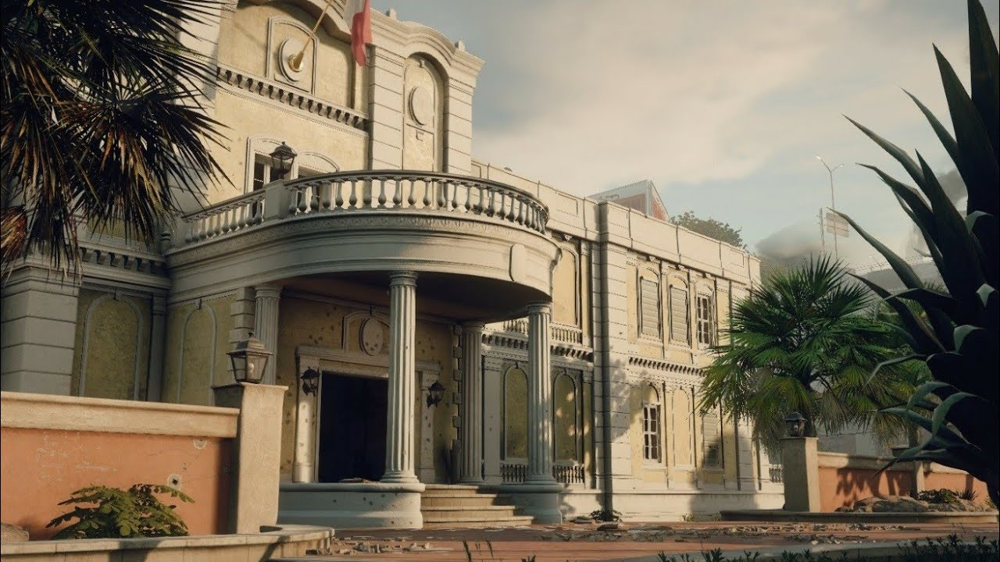

Mapas

BANCO: O foco deste mapa é dar um senso de progressão aos atacantes, que avançam em seu caminho através das áreas mais fortificadas do prédio. O layout é inspirado em vários bancos, com destaque para o Bank of America, um dos maiores dos EUA. Localizado na capital Washington D.C., o banco é famoso pelo altíssimo nível de segurança, que inclusive impede o registro de imagens dentro do seu espaço interno.
CASA DE CAMPO: Localizado na Alemanha, o mapa Casa de Campo retrata uma situação de invasão a uma gangue de motoqueiros, e é inspirado pela operação feita em 2012 para prender o líder da gangue Hells Angels, Frank Hanebuth. O cenário é composto por áreas de bar, mesas de bilhar e combina interior/exterior de maneira a oferecer diferentes spawns para atacantes e defensores. No Six Invitational 2018, foi anunciado que a Casa de Campo receberia uma pequena reformulação na forma de buff. A nova versão do mapa foi lançada com a Operação Para Bellum.
CONSULADO: De acordo com a descrição da Ubisoft, o mapa é inspirado em um consulado francês na Costa do Marfim. Os focos do mapa são o rapel e as janelas, cujas barricadas precisam ser removidas para permitir o avanço dos atacantes. O contexto é inspirado em outra operação: o cerco da embaixada do Irã em Londres, a Operação Rimrod.
OREGON: O mapa Oregan é possivelmente baseado no Cerco de Waco, operação realizada pelo governo norte-americano em 1993, no Texas. O objetivo dos agentes do FBI Swat era cumprir o mandado prisão de David Koresh, líder de uma seita apocalíptica, mas a morte de 76 pessoas tornou o caso um dos mais falados dos EUA. O layout do mapa Oregon é amplo e diverso, exigindo táticas adaptadas para agir de forma eficaz.
FRONTEIRA: Um dos mapas mais abertos e destrutíveis do jogo, a Fronteira é parte do DLC Operação Dust Line, lançado em 2016. Suas estruturas e localização reproduzem uma fronteira no Oriente Médio, cenário na vida real de constantes confrontos religiosos. Algumas das fronteiras de maior semelhança com o mapa ficam em Jerusalém e Israel.
LITORAL: Parte do DLC Operação Velvet Shell, o mapa tem como cenário a costa de Ibiza, na Espanha, lugar famoso pelas suas festas com música eletrônica. A biodiversidade e cultura também tornaram o local patrimônio da Unesco. O Litoral retrata uma boate sob ameaça de bomba, cabendo ao Team Rainbow garantir a segurança dos presentes na evacuação do local. Seu principal traço é o fluxo de combate intenso, com rushes caóticos explorando as diversas partes do layout.
MANSÃO: O novo mapa no competitivo de R6 é a Mansão. Parte do DLC Operação Para Bellum, ele retrata a mansão dos Vinciguerra, família do crime italiano famosa pelas suas atividades de contrabando. Na vida real, o terrorista Vincenzo Vinciguerra cumpre prisão perpétua por assassinar três policiais com um carro-bomba em 1972. O mapa foi criado para oferecer alto nível de gameplay e tem grandes escadas, túneis estreios e passagens secretas. Certas partes do chão podem ser destruídas, expondo o jogador.